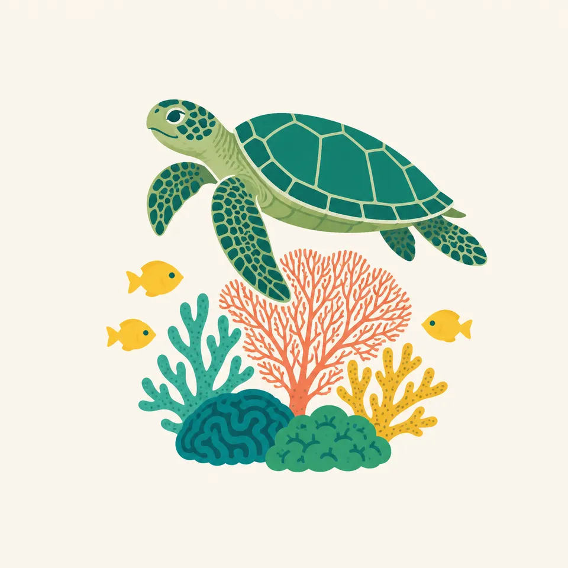
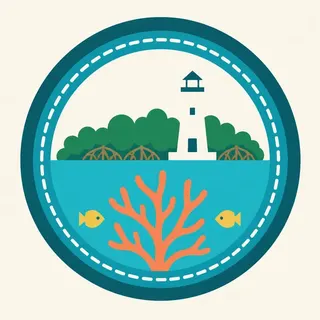

01
The ecotones
The nature page does not treat the park as a single habitat. Four ecosystems grade into edge communities. That grading is where it places the wildlife.
TrailMark Archive Edition
Florida | Biscayne Bay
A monument on October 18, 1968. The statute that makes it a park names June 28, 1980.
Archive No. TM-BISC-030
National Park since 1980
Collection Biscayne Bay
Park Overview
President Lyndon B. Johnson signed Biscayne National Monument into law on October 18, 1968, to protect a rare combination of terrestrial, marine, and amphibious life.
The birth page says the park later went through enlargements and a name change, and it does not give the day of that change. The enabling-legislation page, quoting the U.S. Code, establishes Biscayne National Park, abolishes the monument and folds it into the park, and requires a detailed boundary description not more than one year after June 28, 1980. That date is the one this archive uses for the park.
The nature page describes four ecosystems that melt into one another as ecotones. They support manatees, sea turtles, hundreds of species of birds and fish, and plants and insects found nowhere else in the United States. The page also says the park sits next to one of the nation's largest urban areas and is always adapting to storms, currents, and people.
Emotional Thesis
The header splits at the waterline: a decorative lighthouse and mangroves above, a turtle and a reef below. The history page says Mark Honeywell built that Boca Chita lighthouse in the late 1930s. It is a human mark on a park that was established for natural history.
The birth page is a fight, not a dedication. Islandia, a jetport, a seaport, and a spite highway on Elliott Key almost won. The 1968 law is what stopped that version of the bay.
Landscape Highlights
01
The nature page does not treat the park as a single habitat. Four ecosystems grade into edge communities. That grading is where it places the wildlife.
02
Honeywell's late-1930s lighthouse is the history page's picture. The birth page says the northern keys are still without roads and bridges. The light is a landmark, not a harbor guarantee.
03
In 1968, landowners cut a swath six lanes wide and seven miles long down Elliott Key. The birth page calls it spite highway. It says that cut has grown into a tunnel of tropical hardwood and is now the park's only hiking trail.
Wildlife
The nature page lists manatees, sea turtles, hundreds of bird and fish species, and plants and insects found nowhere else in the United States.

01
The extra drawing is one sea turtle over coral. The nature page says sea turtles. It does not give this essay a nesting count.
02
Hundreds of colorful fish on the reef is the nature page's own caption language. A school in the header is an illustration of that sentence.
03
Urban pressure is part of the wildlife paragraph, not a separate topic. Winds, currents, and storms are named in the same breath.
Geology
The birth page says the Florida Keys do not begin at Key Largo. Nearly 50 more keys, ancient coral-reef islands, lie to the north, and many of them sit inside this park.
01
A plan described on that page would have dredged a 40-foot channel through the bay for the Seadade seaport, announced in 1962. Another plan would have dredged 8,000 acres of bay bottom for a jetport. The monument stopped that version of the bottom.
02
The reef in the header is living. The keys are the older reef. The page treats them as one argument.
03
This essay does not add an acreage. The pages opened here describe the water and the keys without a single parkwide total in the prose used above.
The nature page says storms are part of how the park keeps changing. Hurricane timing and closures are current NPS notices, not a line in this essay.
The birth page says the shallow water is still clear. That is a description from 2017 on that article, not a water-quality report for today.
Spite highway is the park's one hiking trail, grown over into hardwood forest. Everything else the birth page cares about is by boat.
The same page says Greater Miami had become a Latin American capital, with 4 million residents and 10 million annual visitors. The park is beside that, on purpose.
Photography
A lighthouse alone is Boca Chita. A turtle alone is an aquarium. The park is both.
01
Mangrove, light, and reef in one frame matches the four-ecosystem idea better than a single habitat.
02
Elliott Key's old spite cut is a walk. Most of the park is not. Plan on the water, and check NPS for how.
03
They are archaeological. Photograph within the rules. Do not move an object to improve a picture.
Field Notes
They cut a highway to spoil an island. The forest took the road back, and the bay stayed.
TrailMark Field Notes

Badge Story
Boca Chita's lighthouse is decorative and late-1930s. The badge needs the bay and the reef with it.
Waterline, mangrove, and coral.
A turtle can be the animal. It is not a census.
Do not swap in the American Samoa ridge. This park is a bay beside a city.
Archive No.030
LocationBiscayne Bay
ReleaseBay Mark
Stewardship / Safety
The enabling page says that, notwithstanding any other provision of law, no fees shall be charged for entrance or admission. Fishing stays under Florida law unless the Secretary limits it for conservation. Special-use fees and closures still live on NPS.
The northern keys are still without roads and bridges. Do not assume a causeway.
Manatees and sea turtles are named wildlife. Distance and propeller habits matter in a bay full of boats.
Shipwrecks and shell middens are part of the 10,000-year record. Leave them.
The birth page says local threats did not end in 1968. Current rules are on the park site.
Current conditions, fees, and alerts are on the National Park Service site.
Continue the Archive
Everglades is already in the archive. Dry Tortugas is not published here yet. American Samoa is the Pacific reef in this same batch.